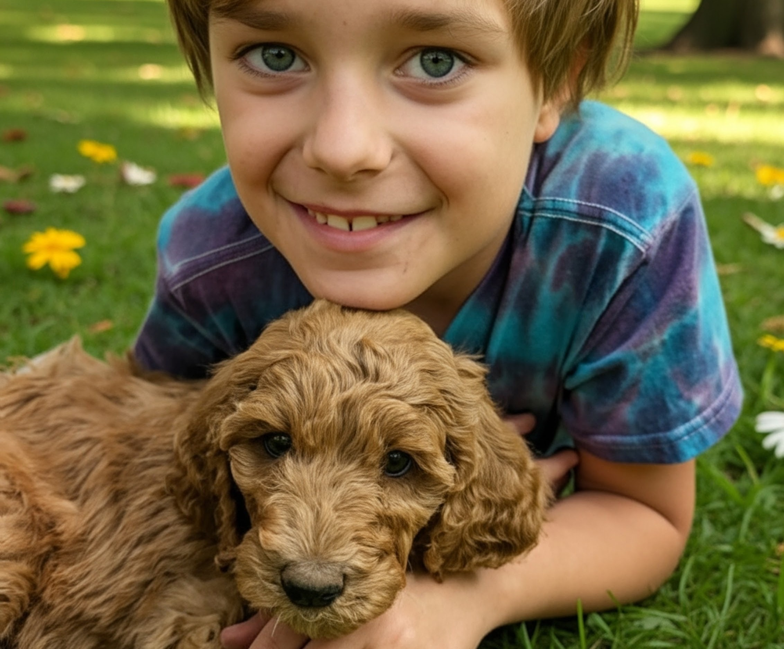
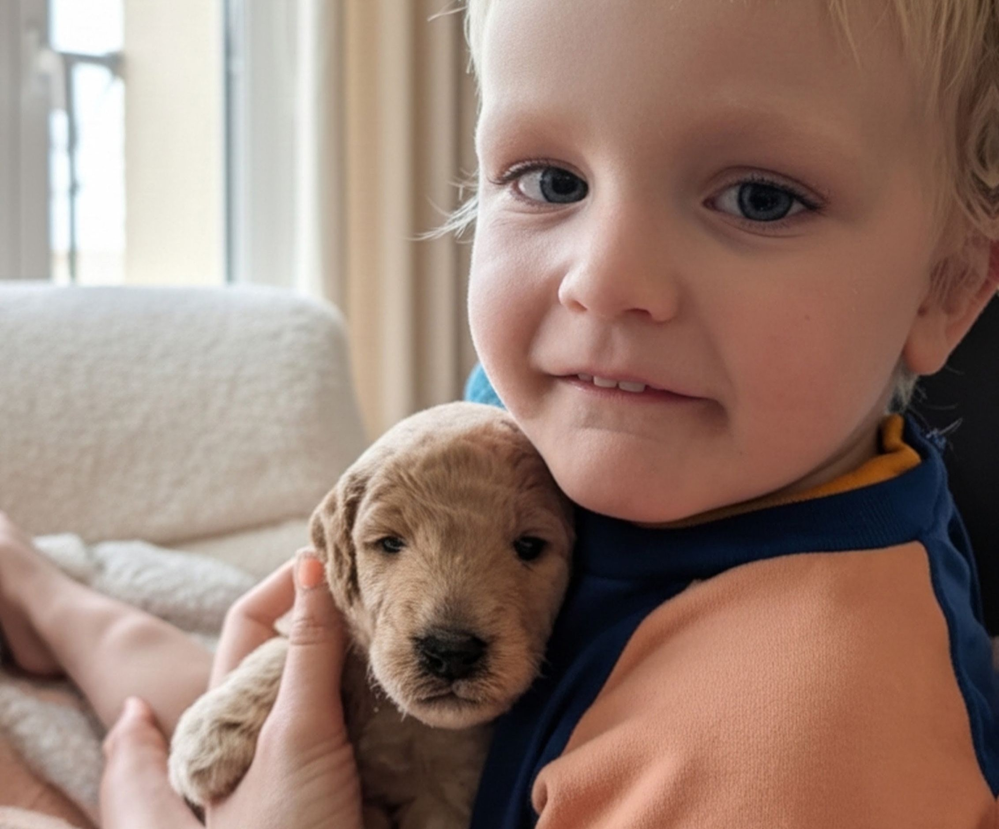

Raising wonderful companions since 2021
Raising wonderful companions since 2021


Over the years it has been our great joy to see so many people happy and excited to be taking puppies home. Some have been surprises for family members. Children have come to take their new best friend’s home. We feel so blessed to be a small part of other people's joy and happy experiences, making life long memories. This page is dedicated to the people who have given loving homes to our puppies. If you are viewing this page and have got a puppy from us in the past, please send me a picture HERE of you with your puppy or dog and we would be happy to add you to this page.